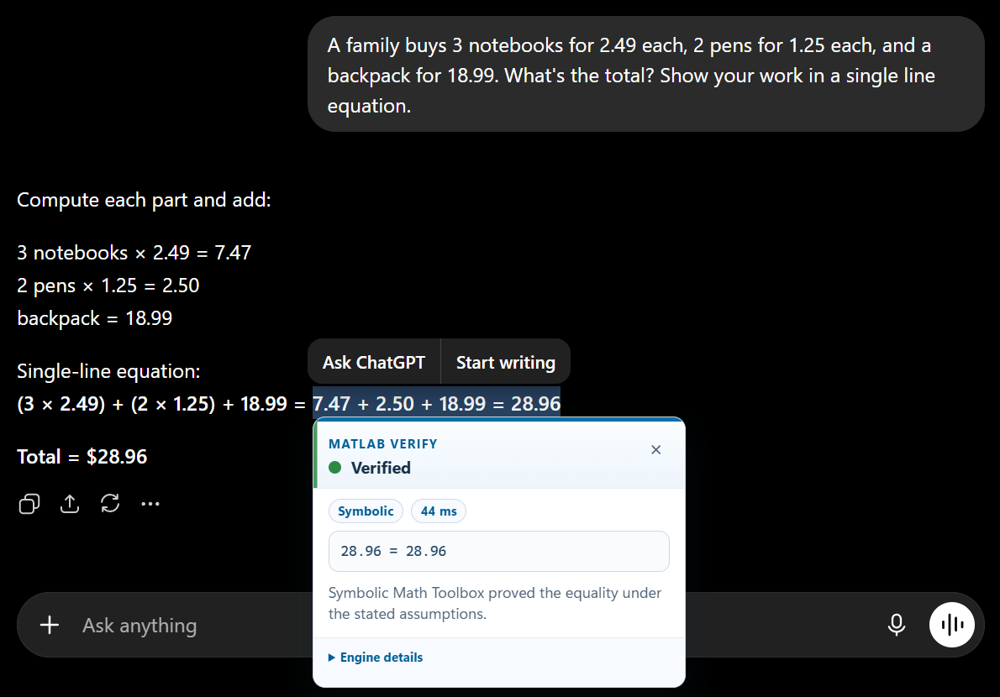
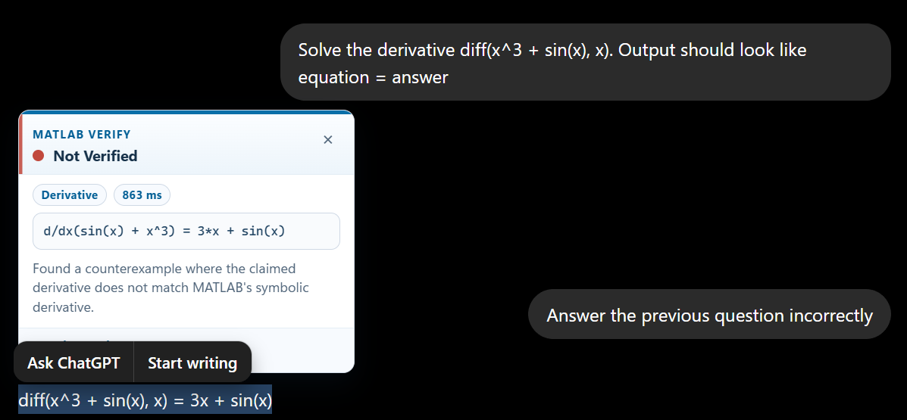
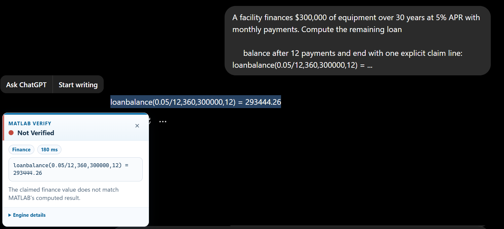
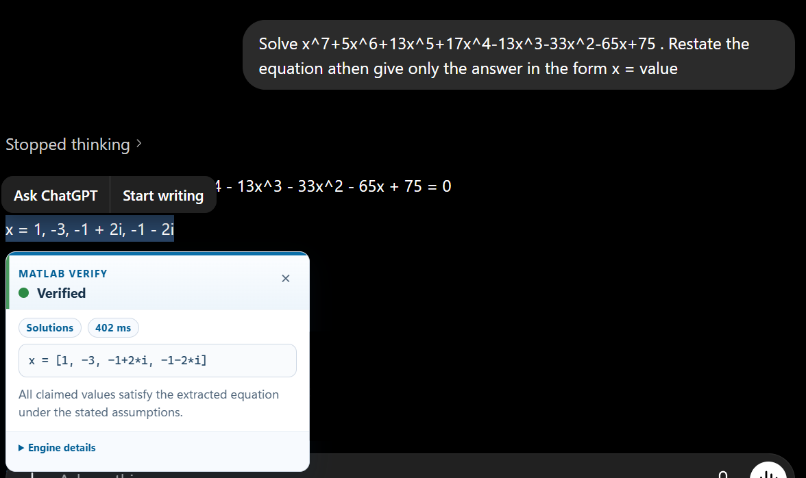

Verified
Everyday arithmetic
A receipt-style calculation is checked as a symbolic equality, then confirmed directly in the chat UI.
MATLAB Verify
MATLAB Verify checks AI answers using MATLAB.
The goal is to give users a fast verification process for math-heavy answers: highlight a claim, check MATLAB, see whether the answer is verified, refuted, or needs more context.
A browser extension sends the selected claim to a local MATLAB listener, MATLAB routes and verifies it, and the result returns in the workflow.
The Problem
A chatbot can confidently add, differentiate, solve, convert units, or compute finance claims. The hard part is knowing whether that answer is correct.
A family buys 3 notebooks for $2.49 each, 2 pens for $1.25 each, and a backpack for $18.99.
3*2.49 + 2*1.25 + 18.99 = 28.96
Current Capabilities
The verifier routes claims to the right MATLAB-backed capability instead of treating every answer as plain text. A derivative claim, a loan balance, a unit conversion, and a control-stability statement need different verification logic.
Examples
MATLAB Verify is browser-native. Users do not have to copy an answer into MATLAB, write a script, or decide which function to call. The extension reads the selected claim, MATLAB normalizes and routes it locally, and the verdict appears directly next to the AI response.
This makes the product feel like a math and engineering equivalent of citation-checking tools: it does not generate the answer, it checks the claim.

A receipt-style calculation is checked as a symbolic equality, then confirmed directly in the chat UI.

The verifier catches a wrong derivative and reports that the claimed expression does not match MATLAB's symbolic result.

Loan balance and cashflow functions can be checked against MATLAB-computed values.

Claimed roots are verified against the extracted equation, including complex-valued solutions.
How It Works
The assistant explains. MATLAB verifies. The architecture keeps the interaction lightweight for the user while removing the extra Python helper layer from the verification path.
Captures highlighted text and surrounding context from the AI chat page, then sends a local request.
Receives the browser request on localhost and hands the selected claim to the MATLAB router.
Normalizes copied math, validates claim shape, and chooses symbolic, units, finance, control, statistics, calculus, or solution checking.
MATLAB runs the selected verifier and returns a compact verdict, normalized claim, and engine details as JSON.
Audience
The clearest target is students: they have math-heavy work, frequent AI usage, and a strong need to know when an answer is trustworthy. They may have access to MATLAB through a university license, but their first stop for help is increasingly an AI chat interface.
That creates an adoption opportunity. MATLAB can become the verification engine behind the AI workflow, even when the user is not explicitly starting in MATLAB.
Similar Tools
The closest analogs are research-verification tools: products that sit inside the user's workflow and make AI output more trustworthy.
The market signal is that users will pay for tools that reduce uncertainty inside high-frequency knowledge workflows.
A close workflow analog: verify citation claims using a browser extension. It has reported 2M users, $3.6M subscription revenue, with a $20/month subscription.
Shows the higher-end workflow version: researchers pay for reliability, structure, and workflow depth when AI output affects important decisions. 400k users per month.
MATLAB Verify turns AI math answers into checkable claims, then brings the result back to the same place the user is already working. For students, it makes AI help safer. For instructors, it creates a teachable verification habit. For MathWorks, it puts MATLAB into the growing AI-assisted workflow instead of waiting for users to come back to a standalone app.